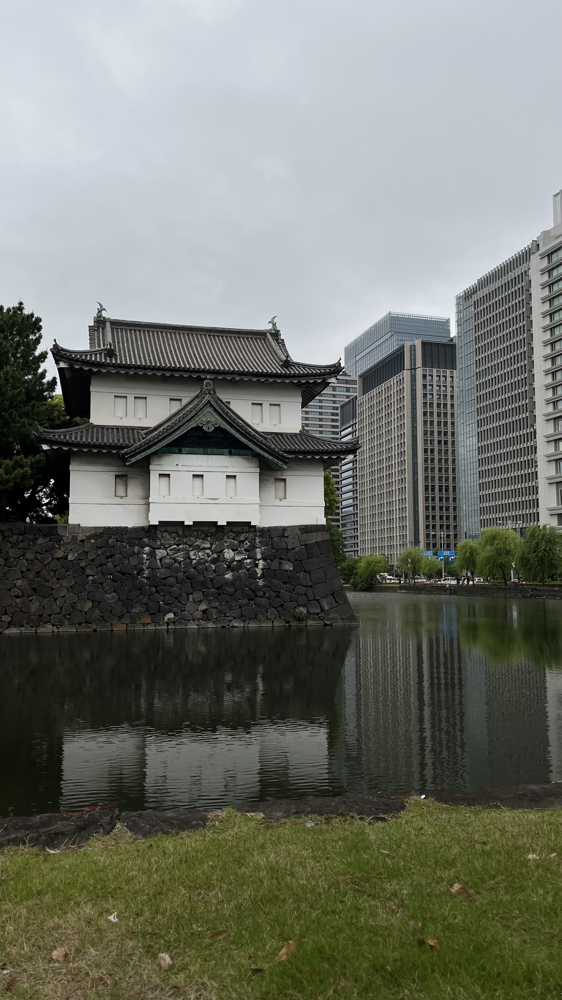
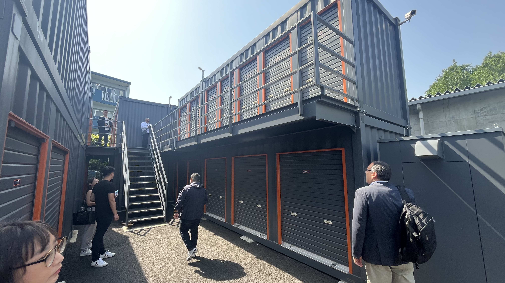
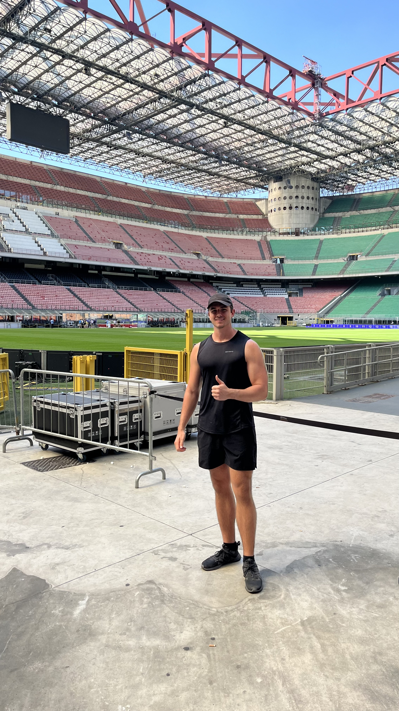
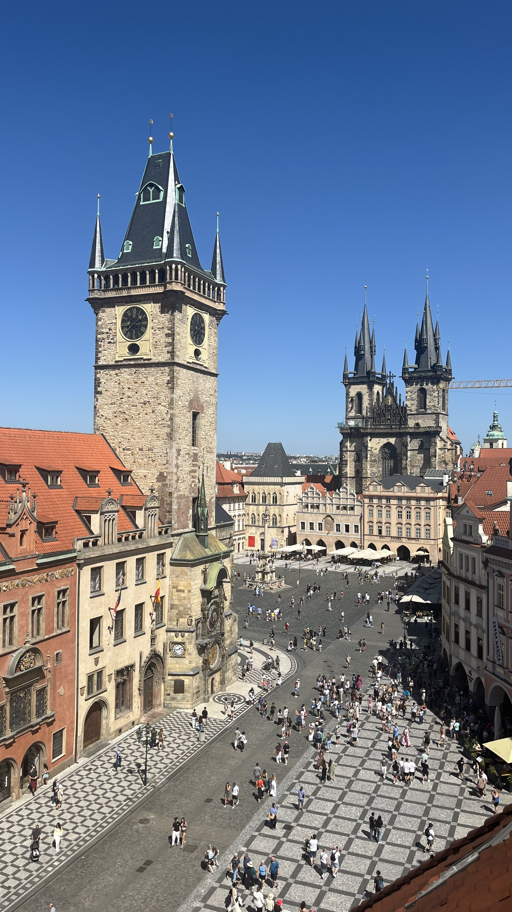
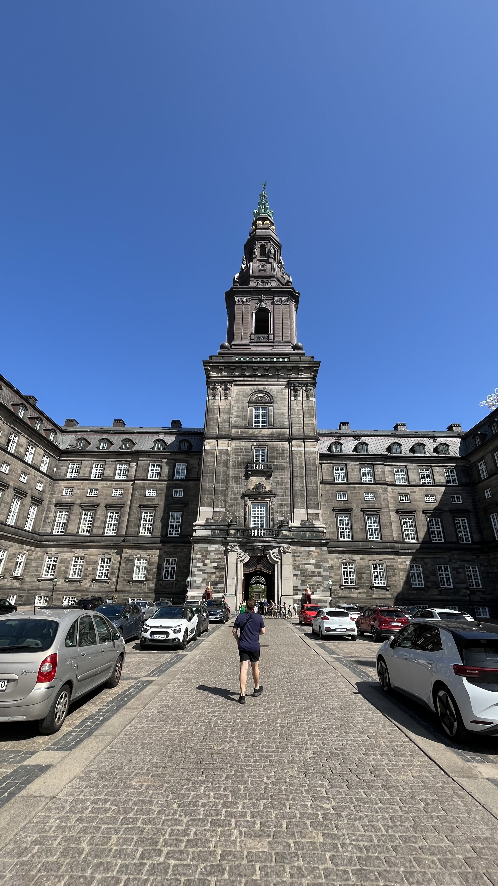
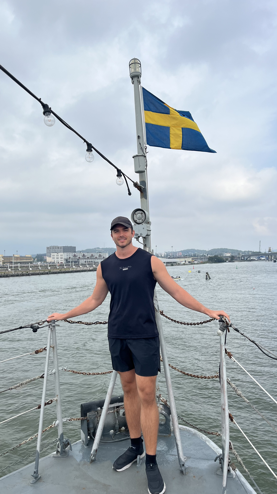
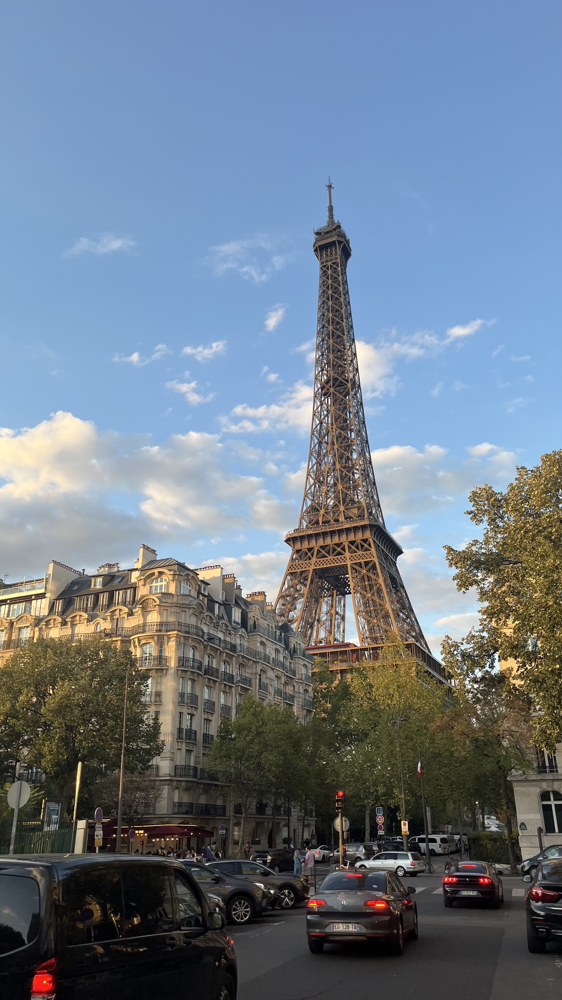
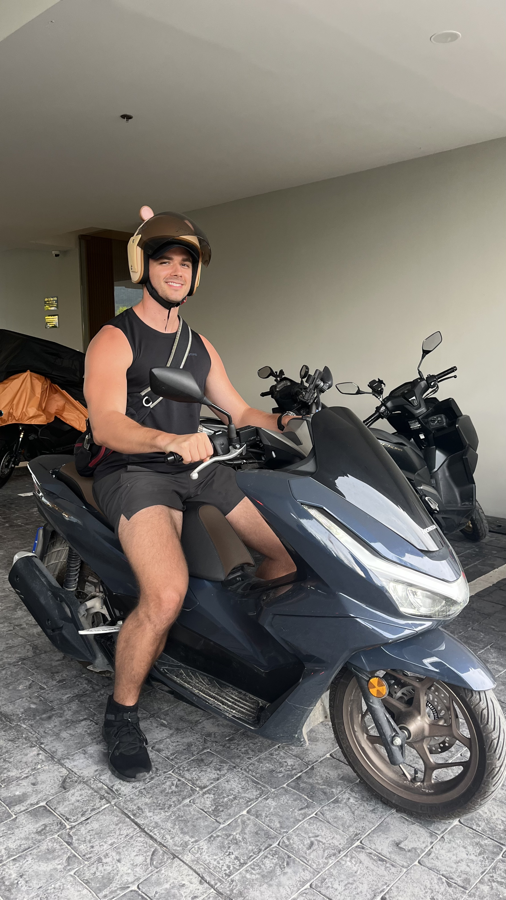
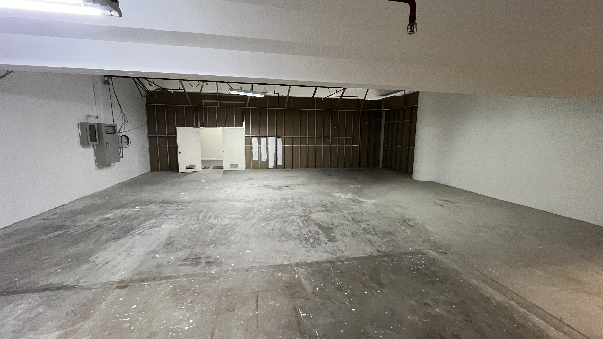
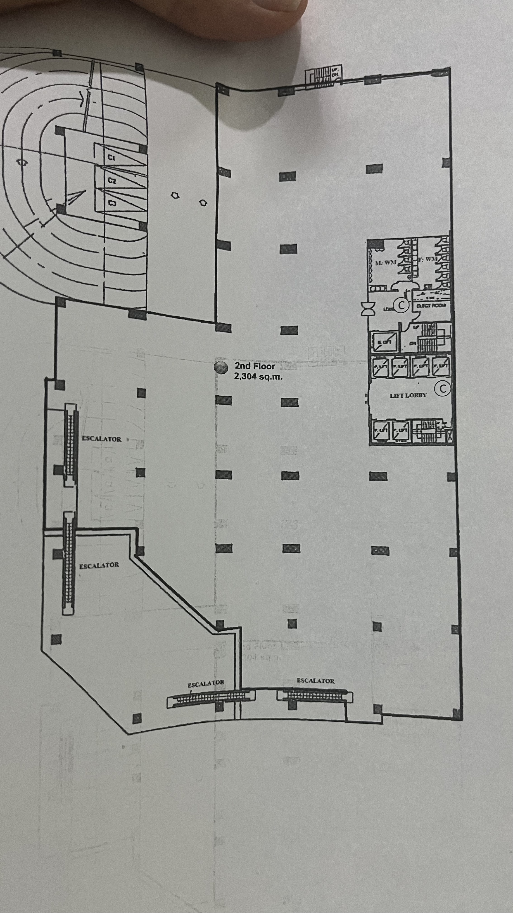

In January of this year, I decided to take a break from working full time and spend most of the year in Southeast Asia. My home base was in Bangkok, Thailand. (This would mark my 3rd visit to Thailand).



I decided to explore self storage in Bangkok, touring properties and meeting with industry professionals. Regardless of location/country — people need storage. This was very evident in Bangkok due to the density of the population and condo buildings with an average size of about 40sqm (430sqft). I was able to learn about the market, the growth of the industry there and future outlook — which is promising.
Secondly, I realized the growing popularity of saunas/ice baths businesses and running clubs. There seems to be a fitness wave and interest in these activities. This led me to finding a location to start such a sauna/ice bath business which expected to launch in Q1/Q2 2026.
In May, I attended the Self Storage Conference in Tokyo, Japan which was my first visit to the country. The main theme from the conference was the emerging storage industry in Asia and long runway for it. I was able to tour a few locations as well. Japan has nearly 14,000 facilities! The city was incredibly clean, quiet, and orderly. I tend to walk a lot in a new city and appreciated the wide sidewalks! I'll have to visit again soon…

In July, I visited a colleague in Manila, Philippines. He owns a self storage app that allows users to rent out empty spaces (garage, basements, parking etc) and list the space on the platform. Manila left an imprint on me due to the severe poverty and stark contrast from the business district (office buildings, high rises, clean) to where my hotel was located (the opposite). It was like two different worlds — regardless the need for storage is also evident there and its a growing industry.


In August/September, I decided to meet a few friends in Europe and spending a few weeks traveling around. This was my first visit to Europe so I was excited to see iconic cities, visit museums, and try the different foods. Europe was incredibly scenic and the architecture design was amazing. I often took buses to different cities but also a few trains as well. I did some solo traveling for about half the time I was over there. I find this is one of the best life experiences — relying on yourself, being uncomfortable, and just going for it!



To wrap up 2025 — I decided to head back home to Florida to spend time with my family and enjoy the holidays. This time has allowed me to reflect and pursue some other business initiatives. I think 2026 will be an incredible year!

